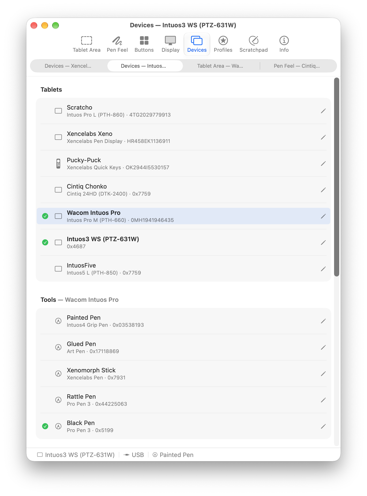
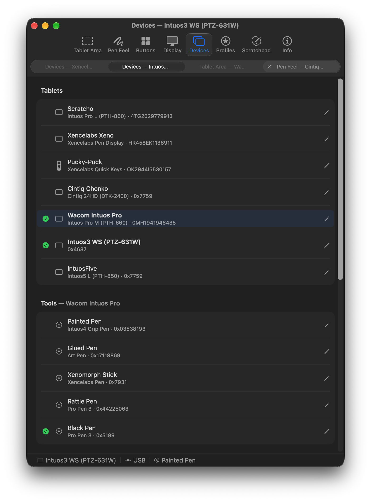
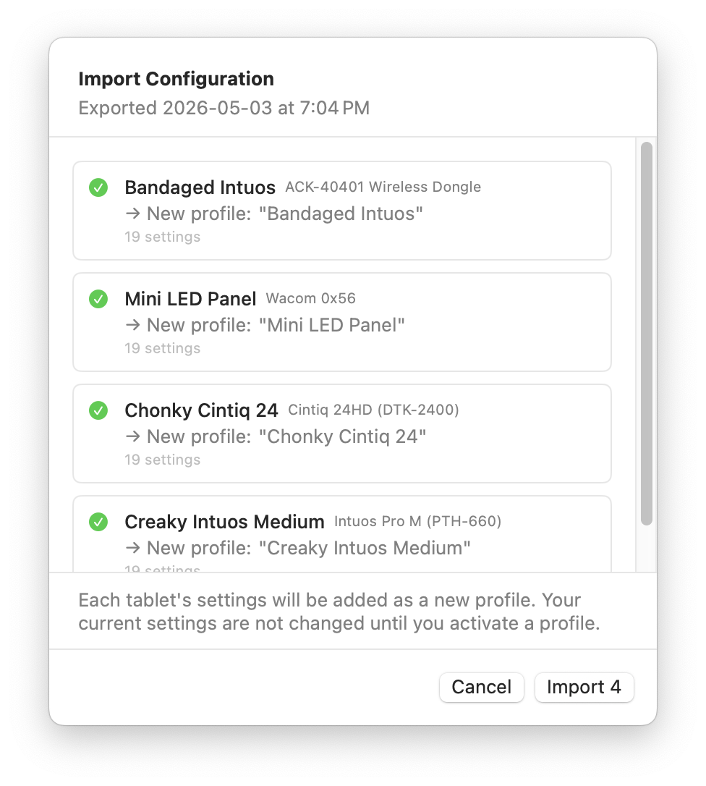
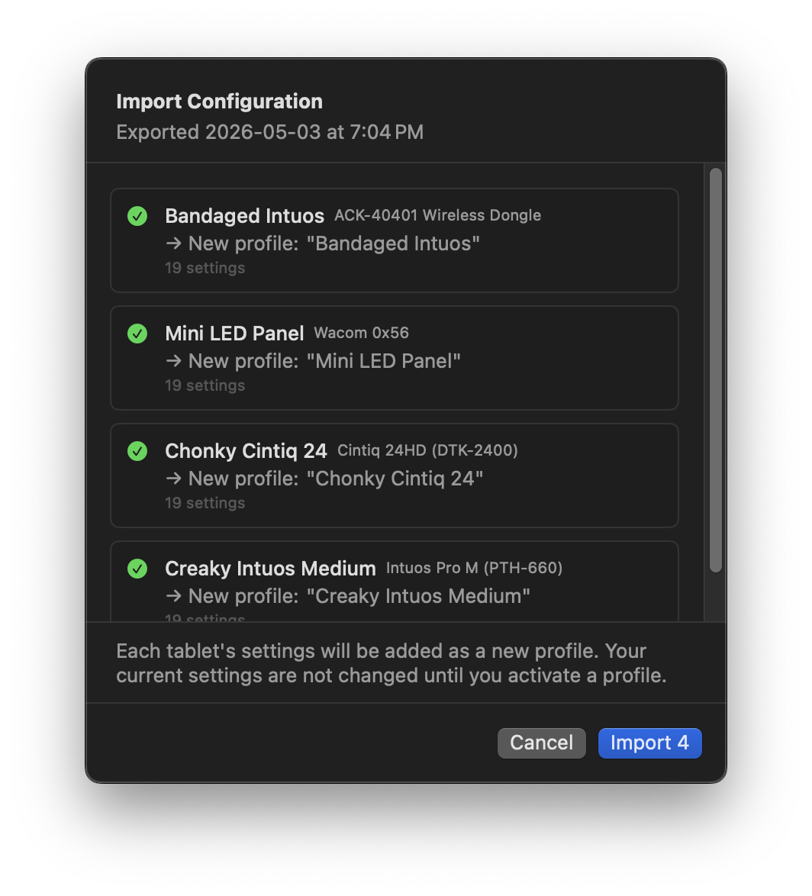
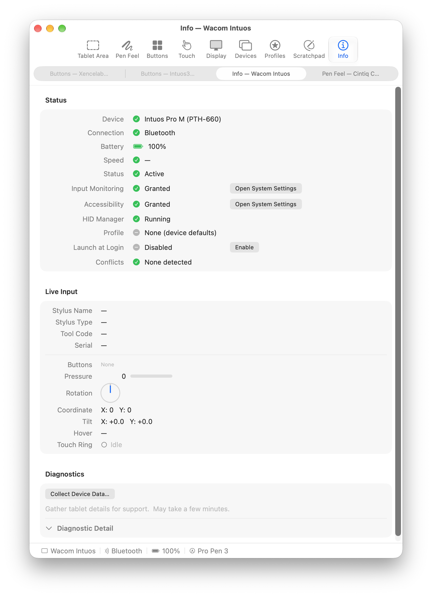
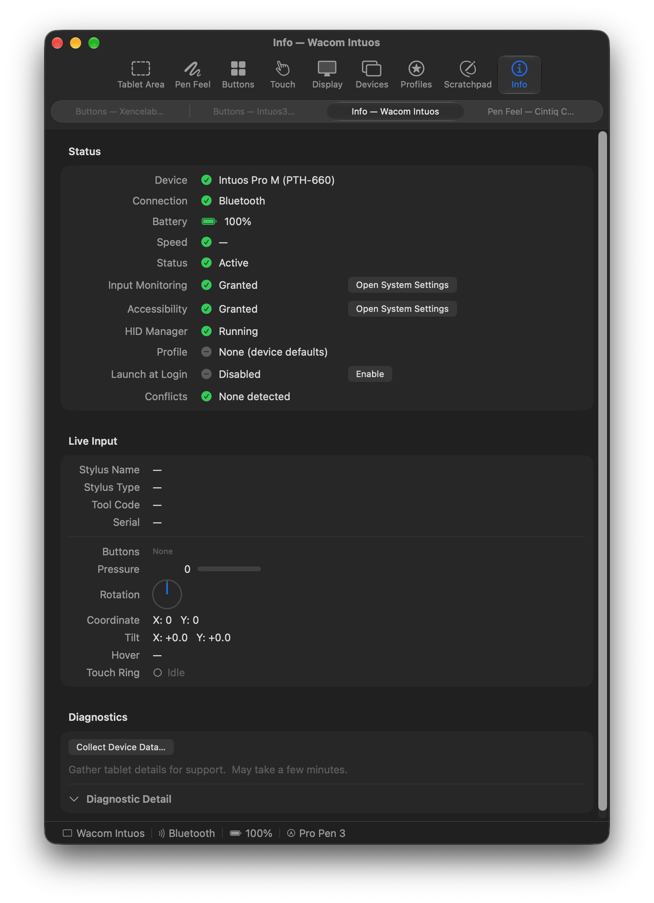
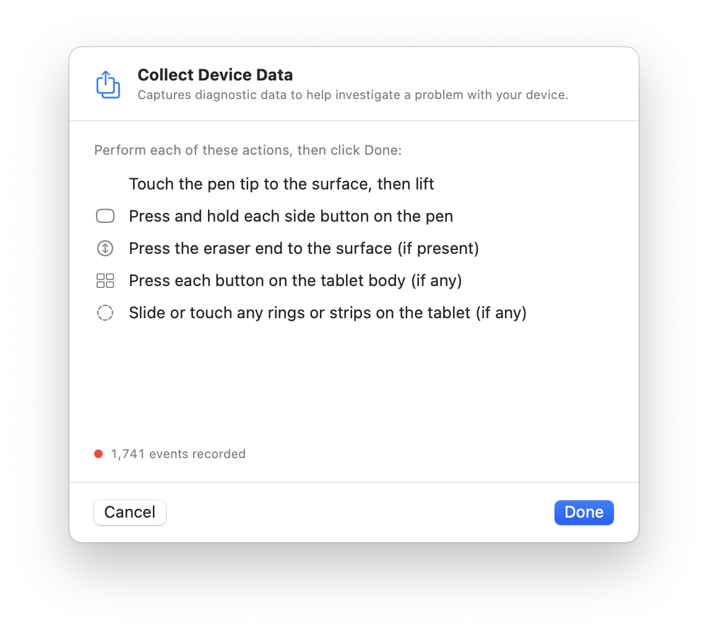
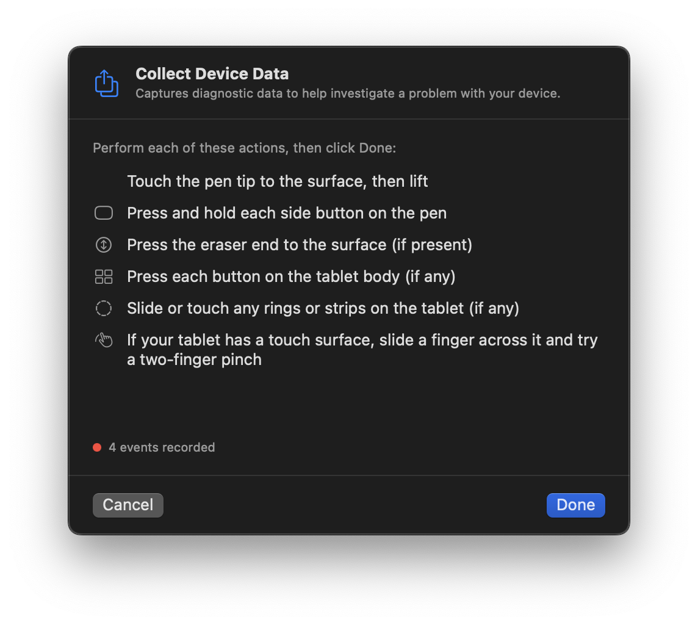
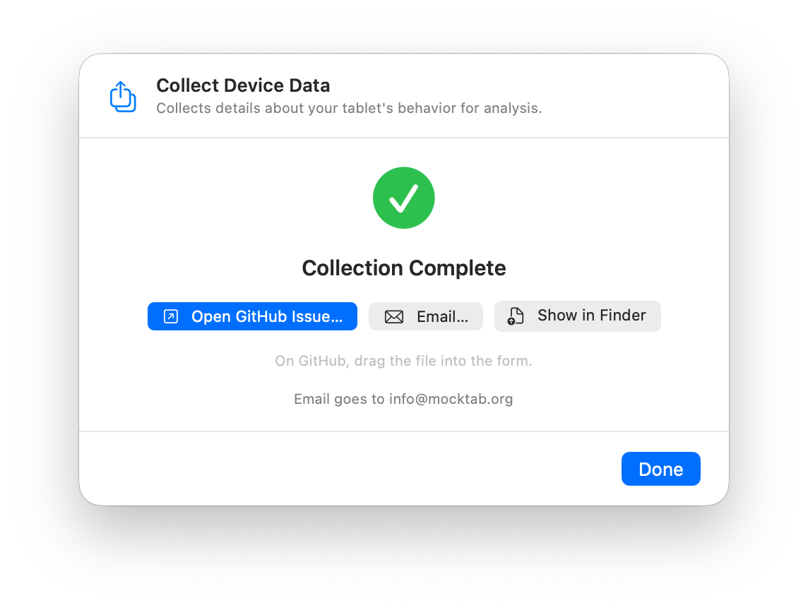
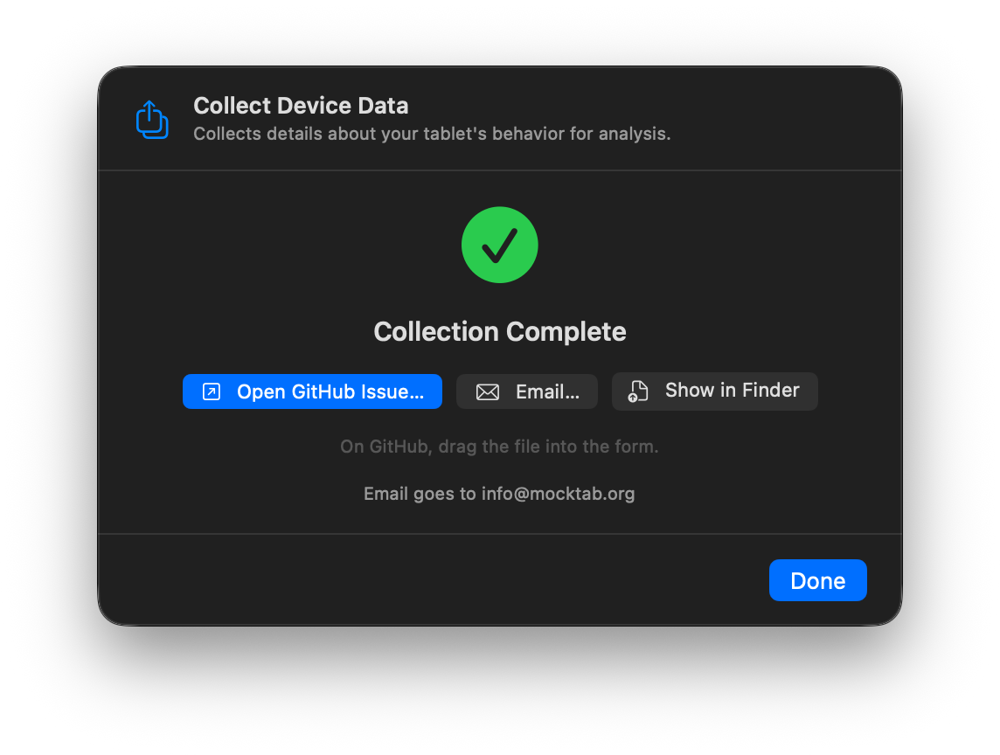

Guide
This guide covers each settings pane and how they fit together. MockTab saves every change automatically.
Getting started
Open Devices to check that MockTab sees the tablet, then Tablet Area to set the active area and orientation. The panes:
- Devices: connected tablets, battery, and connection.
- Profiles: named presets and per-app settings.
- Button Mapping: pen buttons, ExpressKeys, touch rings, and dials.
- Tablet Area: active area and orientation.
- Display Mapping: which display, and alignment.
- Pen Feel: pressure, smoothing, double-clicks, and rotation.
- Touch: finger scrolling, tapping, and touch area, on tablets with touch.
- Scratchpad: a blank canvas for testing.
- Info: live tablet state, for troubleshooting.
Settings
Settings affect multiple levels:
- Device defaults: the baseline for the tablet.
- Pen settings: each pen, eraser, and mouse keeps its own pressure curve and buttons, so two pens can feel different.
- Active profile: a named preset that overrides the defaults.
- App settings: apply only while a given app is in front.
Editing an app's settings changes only that app; the profile beneath stays the same. The bar at the bottom of the window shows which app's settings are active, if any.
Devices
The Devices pane lists every tablet MockTab has found, with its name, connection, and battery level.
Each connected tablet has its own settings. Switch between them with the tabs at the top of the window.
For Bluetooth pairing and other setup, see Configuration.


Profiles
A profile saves a tablet's settings (display, pressure, buttons, and more) so you can switch between workflows. Create one from the current settings, then switch back to it any time.


Per-app overrides
The bar at the top of the Buttons, Tablet Area, Display, and Pen Feel panes holds per-app settings. Global edits the shared settings; each app's chip edits settings that apply only while that app is in front.
Add an app from the menu, or drag it from Finder or the Dock onto the bar. (To drag from the Dock, hold ⌘ while dragging.)
An app appears in the bar only once it has its own settings. Removing an app deletes its settings, and the shared settings apply again.


Auto-switching profiles
The Auto-Switch section in the Profiles pane lists apps that switch profiles. When one of them comes to the front, MockTab loads its profile. Turn auto-switch off for an app to stop it.
Export and import
Export saves a profile to a file, with every setting except per-pen and per-app settings. Import merges a file into the current settings without replacing your other profiles.


Button Mapping
The Button Mapping pane assigns actions to every control: pen tip, eraser, pen buttons, ExpressKeys, touch rings, and dials.


Binding kinds
Each button can do one of these:
-
Left / Right / Middle Click
Clicks at the cursor. Middle Click + Tip also sends pressure, which SketchUp and a few other apps need.
-
Double Click
Double-clicks, for renaming files in Finder or selecting words in some apps.
-
Eraser
Switches to the eraser in many creativity apps.
-
Spacebar
Presses Space. Useful for apps that pan with Space and drag.
-
Key Combination
Sends a keyboard shortcut, with optional modifiers (⌘ ⌥ ⇧ ⌃). Click the record button and type the shortcut.
-
Toggle Display
Moves the tablet to the next display. Choose the displays in the Display Mapping pane.
-
Ring: Cycle / Dial: Cycle
Moves the touch ring or dial to its next mode. See Touch rings, dials, and slots.
-
Ring: Mode N / Dial: Mode N
Jumps the touch ring or dial straight to one mode.
-
Pan View
Drags the canvas like a hand tool while held. Turn on Momentum Scrolling in Pen Feel to keep it coasting after release. Some apps and websites don't support it; see Panning for alternatives.
-
Toggle Relative Mode
Turns relative cursor movement on and off.
Recording key combinations
Click the record button next to a Key Combination, then type the shortcut. A modifier alone, such as ⌘, works too, and behaves like a real modifier key, which some Adobe apps rely on.
Shortcuts keep working if your keyboard layout changes, for example with Qwerty-Control for Dvorak while you hold ⌘.
Pen buttons
Most Wacom pens have one or more side buttons. Button 1 (the lower one) defaults to Right Click, and Button 2 to Middle Click. Some pens and mice have buttons 3 to 5.
Button 1 also allows hover drag: hold it while the pen hovers to drag without touching the tablet.
Express keys
ExpressKeys are the buttons on the tablet itself, and each can do anything a pen button can. They send only a press and a release, so for actions you hold down (like panning in some apps), assign a modifier key with Key Combination instead.
Touch rings, dials, and slots
Touch rings, mechanical dials (such as on the Intuos Pro Gen 3 and Xencelabs Quick Keys), and the scroll wheel on some Intuos models all work the same way. Each has up to four modes, called slots, each with its own action and speed. On tablets with ring lights, the lights show the current slot. Each of the Cintiq 24HD's two rings has three slots. The button in the center has its own separate action.
On tablets with two dials, each dial has its own slots, and the Dial 2 actions switch the second one.
Each slot uses one of these modes:
| Mode | What it sends | Speed multiplier |
|---|---|---|
| Scroll | macOS scroll wheel events. | Lines scrolled per step. Above 1.0 is faster; below is finer. |
| Zoom | Smooth pinch-to-zoom, like a trackpad. | Zoom per step, up to 8×. |
| Rotate | Smooth two-finger rotate, like a trackpad. | At 1.0×, one full turn of the ring or dial turns the canvas 360°. Lower values turn it less. |
| Key Press | One shortcut for clockwise and another for counterclockwise. | Higher values send more presses per step. |
| Off | Nothing. | — |
| Skip | Nothing, and Cycle skips this slot. | — |
Record the shortcuts the same way as for pen buttons, such as brush size ([ / ]).
Touch strips on older Intuos tablets use the same slots. Each strip has its own action and speed.
Assign Cycle to a pen button or ExpressKey to change modes without looking.
On tablets with lights, each slot's Light row sets its color and brightness.
Xencelabs Quick Keys
The remote's screen labels each key with its action, as on Intuos 4 tablets. Rotation, OLED Brightness, and Sleep Timer adjust the screen.
Tablet Area
The Tablet Area pane sets which part of the tablet maps to the display. Drag the rectangle to resize it; it snaps to the display's shape. Hold ⌘ to skip snapping, or ⇧ to keep its shape. Fit to Tablet, Fit to Screen Area, and Best Fit size it in one click, and Edit Mapping takes exact numbers.
Proportional mapping matches the area's shape to the display's, so circles stay round instead of stretching into ovals.


Tablet orientation
Orientation rotates the tablet in 90-degree steps:
- Landscape: no rotation.
- Portrait: 90 degrees clockwise.
- Landscape Flipped: 180 degrees.
- Portrait Flipped: 90 degrees counterclockwise.
Pick the one that matches how the tablet sits on your desk.
Display Mapping
The Display Mapping pane chooses which screen the tablet controls, and fine-tunes alignment.


Target display
Primary display uses the main screen. A numbered display uses that monitor. Toggle between displays moves to the next display each time you press a button set to Toggle Display. All spans every display as one surface.
Included displays chooses which monitors the toggle visits, so you can skip one, such as a pen display off to the side.
Calibration
Offset X and Offset Y shift the cursor. On pen displays, use them to line the cursor up with the pen tip.
Parallax Offset allows even finer adjustment, below a single pixel.
On supported pen displays, Brightness, Contrast, and, where available, Gamma and Color Space adjust the screen itself.
Pen Feel
The Pen Feel pane adjusts how the pen responds.


Pressure curve
The pressure curve shapes how pen pressure reaches the app. Three presets come built in:
- Linear: pressure passes through unchanged. Use it when the app has its own curve.
- Soft: pressure builds gradually from a light touch. Suits ink and brush work that needs control at low pressure.
- Firm: takes more force before pressure rises. Suits markers and technical drawing that want a crisp minimum line.
Drag the handles in the curve editor to shape it freely. Across is how hard you press; up is what the app receives. The preview updates as you drag.
Smoothing
Smoothing steadies the cursor against hand tremor. Higher values smooth more but add lag. For drawing, moderate values work well. For pixel-precise work, set it to zero.
Smoothing moves only the cursor, and eases off during fast strokes.
Pressure Smoothing steadies pressure on its own. Click Threshold sets how hard you press before the tip clicks.
Drag Threshold sets how far the cursor must move before a press becomes a drag, which helps with jittery pens. Tip-up Assist keeps the end of a fast stroke from getting clipped when you lift the pen.
Double-click distance
When a second tap lands close to the first, MockTab moves it onto the first tap, so small hand movements don't break a double-click. Set the slider to zero to turn this off.
Rotation handling
Invert Rotation Direction reverses Art Pen barrel rotation for apps that read it backward. It applies to the whole tablet, and the per-app bar can change it for single apps.
Photoshop, Illustrator, Krita, and Rebelle all read Art Pen rotation. See Application notes for where each app shows it.
Relative cursor movement
In relative mode, the pen works like a mouse: it moves the cursor from where it is, instead of to a fixed point on the screen. Useful for presentations, or whenever a mouse feels more natural.
Relative mode ignores display and alignment settings. The pen can reach every corner of every display.
You can also assign Toggle Relative Mode to a button (see Binding kinds).
Touch
The Touch pane sets up finger touch on tablets that have it. Touch has its own on/off switch, sensitivity, and area, separate from the pen.
Enable finger touch turns touch on. Some tablets also have a touch switch on the tablet itself, which must be on too.
Two-finger scroll scrolls smoothly, just like a Magic Trackpad, including the bounce at the edges in Safari and Preview. Reverse direction flips it to feel like a mouse wheel. Sensitivity sets how fast one finger moves the cursor.
Momentum Scrolling keeps content coasting after you lift your fingers. It's off by default. Pen Feel has the same setting for Pan View, and the per-app bar can turn either on just for the apps where it works.
Pinch to Zoom and Rotate work like the trackpad gestures: spread or pinch two fingers to zoom, and twist them to rotate. Scroll, zoom, and rotate each turn on and off separately.
The Touch Area editor works like the Tablet Area editor: drag the handles to set where touch works. Touches outside it do nothing. It's separate from the pen area; most people leave touch on the whole surface.


Scratchpad
The Scratchpad is a blank canvas for testing the pen without opening a drawing app. It shows pressure, tilt, and rotation as you draw. Nothing is saved when it closes.


Info
The Info pane shows the tablet's live state: pen position, buttons, whether the pen is in range, and hover height.
The Jitter reading shows how steady the pen signal is. High readings that persist can mean interference, a low battery on a Bluetooth tablet, or a hardware problem.
Use it to check that the tablet sends data, that a button works, or that the cursor lines up, without opening a drawing app.


Collecting device data
Choose Help › Collect Device Data…, or click Collect Device Data… in the Info pane. The sheet lists things to try: tap the pen, press its buttons, touch with the eraser, press the tablet's keys, slide a finger around a ring or strip, turn any dials, and drag and pinch on a touch surface. Each item checks off when the tablet reports it. Do what your tablet supports, then click Done.
MockTab saves everything in a zip file on the Desktop. From the finished sheet, open a GitHub issue and drag the file in, or send it by email.




Getting help
For more help, open an issue on GitHub. To get the latest version, choose MockTab › Check for Updates.